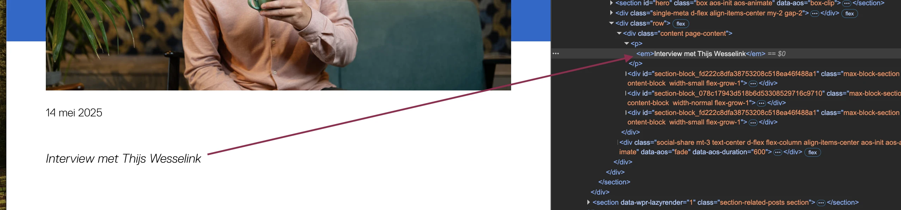
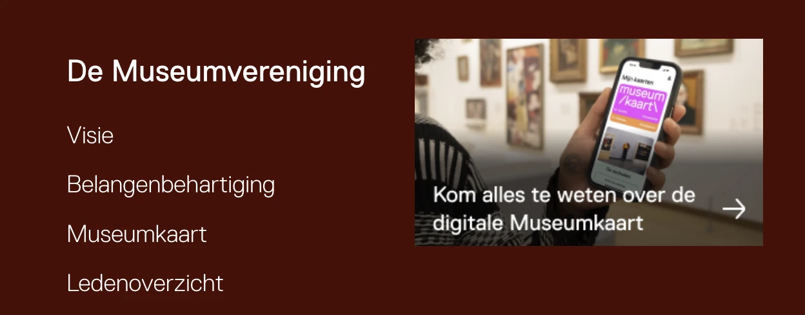
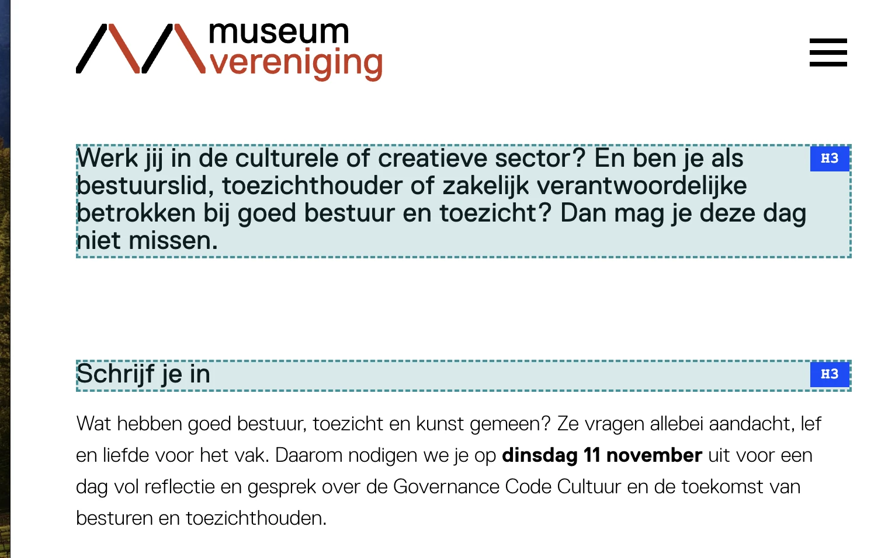
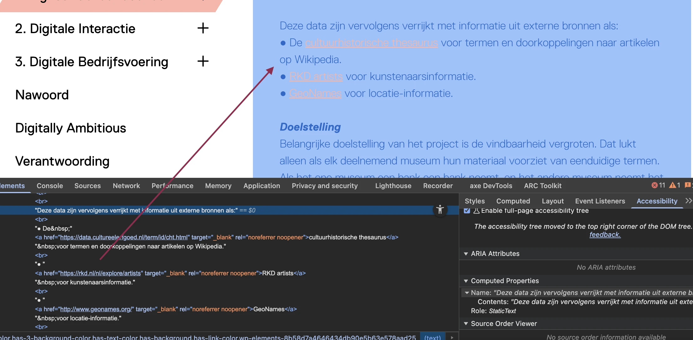
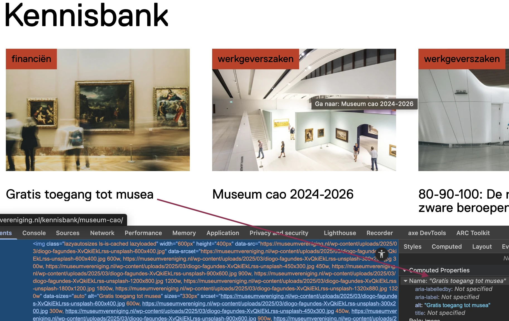
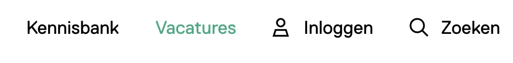
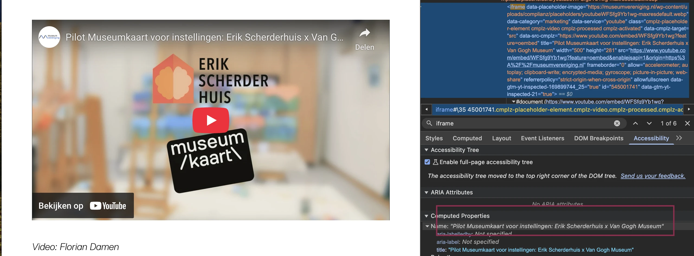
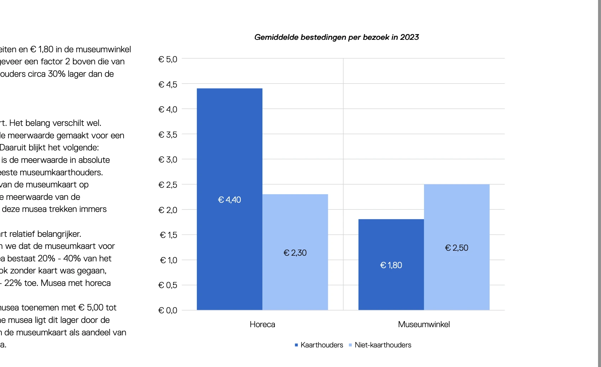

Retest digitale toegankelijkheid van website museumvereniging.nl
Samenvatting
Wij hebben de website museumvereniging.nl op nieuw onderzocht tussen 1 en 15 december 2025. Op dit moment zijn 25 van de 55 succescriteria als voldoende beoordeeld. In dit rapport lees je wat er bij de overige 25 nog fout gaat, en hoe je dat kunt verbeteren.
#1 - Alternatieve tekst zorgt voor herhaling van tekst
Impact: KleinType: ContentWCAG: 1.1.1EN: 9.1.1.1
Onder de kop "Achter de Museumcijfers:Digitalisering" staat een afbeelding. Het tekstalternatief van de afbeelding is hetzelfde als de kop boven deze afbeelding.
Deze afbeelding is decoratief. Hetzelfde probleem komt op deze pagina voor onder het kopje "Nieuws".
Oplossing:
Laat het alt-attribuut leeg om herhaling van de tekst te voorkomen (alt=””).
#2 - SC 1.3.1 em-element is gebruikt voor opmaak
Impact: KleinType: ContentWCAG: 1.1.1EN: 9.1.1.1

Onder het kopje "Achter de Museumcijfers:Digitalisering" op deze pagina is het em-element gebruikt om de tekst “Interview met Thijs Wesselink” italic te maken.
Het em-element heeft een semantische waarde: het geeft een bepaalde betekenis aan de tekst die erin staat. Dit element geeft aan dat de tekst extra nadruk moet krijgen. Om die reden mag dit element niet gebruikt worden om alleen een visueel effect te bereiken (cursieve tekst).
Oplossing:
Verwijder de onnodige em-elementen en gebruik CSS om de tekst schuingedrukt te maken.
#3 - SC 1.3.1 strong-element is gebruikt voor opmaak
Impact: KleinType: ContentWCAG: 1.1.1EN: 9.1.1.1
Onder het kopje "Achter de Museumcijfers:Digitalisering" op deze pagina is het strong-element gebruikt om hele zinnen vet te maken.
Het strong-element heeft een semantische waarde: het geeft een bepaalde betekenis aan de tekst die erin staat. Dit element geeft aan dat de tekst extra nadruk moet krijgen. Om die reden mag dit element niet gebruikt worden om alleen een visueel effect te bereiken (vetgedrukte tekst).
Oplossing:
Verwijder de onnodige strong-elementen en gebruik CSS om de tekst vet te maken.
In de cookiemelding staat de tekst “Cookies”. Deze tekst is niet als kop gemarkeerd.
Oplossing
Markeer deze tekst met een heading-element.
#5 - Zichtbare linktekst komt niet terug in toegankelijke naam
Impact: GrootType: TechniekWCAG: 2.5.3EN: 9.2.5.3
In het bovenste menu staat een link “Zoeken” die een zoekbalk opent. De zichtbare tekst van de link (“Zoeken”) is niet opgenomen in de toegankelijke naam (“Toon zoekbalk”), die via een aria-label wordt aangeboden. Wanneer de zoekbalk wordt geopend, verandert de naam van de knop in “Verberg zoekbalk”, maar ook deze naam komt niet overeen met de zichtbare tekst.
Als de zichtbare tekst van een link niet voorkomt in de toegankelijke naam, kan de link niet met spraakbediening worden bediend. De commando’s die de bezoeker uitspreekt door de tekst van de link voor te lezen, zullen de link dan niet activeren.
Oplossing:
Voeg de zichtbare tekst toe aan de toegankelijke naam, bij voorkeur vooraan. In dit geval pas je het aria-label aan, zodat de zichtbare tekst er ook in komt te staan. Bijvoorbeeld: aria-label=”Open zoekveld” en aria-label=”“Sluit zoekveld”.
#6 - Afbeelding met ingesloten tekst
Impact: MediumType: ContentWCAG: 1.4.5EN: 9.1.4.5

Met de knop “Menu” bovenaan de pagina open je een submenu. In dit submenu staat een afbeelding met de tekst “Museumcijfers 2024 Trends in de museumsector”.
Als je een tekst als afbeelding plaatst, kunnen veel bezoekers er niets meer mee. Dit komt doordat ze de tekst in de afbeelding niet kunnen vergroten of aanpassen.
Oplossing:
Het is beter om deze tekst gewoon als normale tekst op de pagina te plaatsen. Op die manier kunnen mensen de grootte, kleur of het lettertype aanpassen zodat het voor hen leesbaarder wordt. Als de tekst in de afbeelding zit gebakken, kunnen ze dit niet doen.
#7 - Toetsenbordfocus verlaat het mobiele menu terwijl het menu open blijft staan
Impact: GrootType: TechniekWCAG: 2.4.3EN: 9.2.4.3
Wanneer de pagina wordt ingezoomd verschijnt er in de header een menuknop die het mobiele menu opent. Op dit moment kunnen bezoekers met het toetsenbord uit het mobiele menu navigeren. De toetsenbordfocus gaat dan naar de onderliggende pagina terwijl het menu open blijft staan.
Oplossing:
Bij dit soort menu’s moet je de toetsenbordfocus goed instellen. Als het menu actief is, moet de focus binnen het menu blijven, en mag deze niet op de onderliggende pagina terechtkomen.
Dit kun je op een van de volgende manieren oplossen:
Hou de focus binnen het menu totdat de bezoeker op de sluitknop heeft geklikt of op de ESC-toets heeft gedrukt.
Sluit het menu automatisch op het moment dat de toetsenbordfocus eruit gaat.
#8 - SC 1.4.11 De rand van het invoerveld heeft niet genoeg contrast
Onder de tekst "Blijf op de hoogte" in de footer staat een e-mailveld. De contrastverhouding tussen de lichtgrijze rand (#959595) en de achtergrond van de pagina is 2,9:1.
Oplossing:
De randen van interactieve elementen zoals invoervelden moeten minimaal een contrast van 3,0:1 hebben met de achtergrond.
#9 - Zichtbare tekst van het invoerveld staat niet in de toegankelijke naam
Impact: GrootType: TechniekWCAG: 2.5.3EN: 9.2.5.3
Het zichtbare label boven het e-mailveld in de footer is "Blijf op de hoogte", terwijl de toegankelijke naam van het input-element "E-mailadres" is.
Als de toegankelijke naam van een element niet hetzelfde is als de zichtbare tekst, is het voor bezoekers die gebruikmaken van spraaksoftware niet mogelijk om het element te bedienen. Zij spreken een commando uit door de zichtbare tekst voor te lezen. Als deze niet voorkomt in de toegankelijke naam die in de code staat, werkt het commando niet.
Oplossing:
Zorg dat de toegankelijke naam de zichtbare tekst bevat, en zet deze tekst het liefst vooraan in de naam. De toegankelijke naam mag ook precies hetzelfde zijn als de zichtbare tekst.
#10 - Koptekst is onduidelijk
Impact: KleinType: ContentWCAG: 2.4.6EN: 9.2.4.6
In de footer staat een kop met de nietszeggende tekst “Snel naar”.
Teksten zoals “Snel naar”, “Direct naar”, en “Ga naar” zijn te algemeen: links leiden in principe altijd naar een andere pagina, dit weet je ook al zonder dat er bijvoorbeeld “Direct naar” boven staat. Zo’n soort kop geeft dus geen extra informatie of context. Dat is vooral voor bezoekers die schermlezers gebruiken een probleem. Zij laten de koppen voorlezen om snel de structuur van een pagina te begrijpen, en de inhoud te vinden die voor hen relevant is.
Oplossing:
Gebruik een meer specifieke kop, die duidelijk maakt wat voor soort inhoud of functionaliteit erna komt. Bijvoorbeeld door context te geven aan de links die volgen. Denk aan een kop als “Populaire pagina’s” of “Belangrijke onderwerpen”.
#11 - Er staan twee koppen van hetzelfde niveau direct onder elkaar
Impact: KleinType: ContentWCAG: 1.3.1EN: 9.1.3.1

Op deze pagina staat de kop "Werk jij in de culturele ....." met niveau h3. Deze kop wordt direct gevolgd door een andere h3-kop ("Schrijf je in").
Als twee koppen van hetzelfde niveau direct onder elkaar staan zonder inhoud ertussen, dan is één van de koppen niet op de goede manier gebruikt. Direct onder het eerste h3-element mag een h4-element komen of andere content, maar niet nog een keer een h3-element of een h2-element.
Oplossing:
Pas de tekst aan, zodat de kopniveaus de structuur van de tekst correct weergeven.
#12 - Visueel meerdere alinea’s, in de code maar één
Impact: KleinType: ContentWCAG: 1.3.1EN: 9.1.3.1
Onder "Best practice" staat een tekst op een gekleurde achtergrond. Deze tekst bestaat uit meerdere alinea’s, kopjes en lijsten. In de HTML is al deze tekst ten onrechte gemarkeerd als een enkel p-element.
Visueel lijkt de tekst uit meerdere alinea’s te bestaan: blokjes tekst met witruimtes ertussen. Deze structuur moet ook in de code staan.
Oplossing:
Plaats elke alinea in een eigen p-element. Het aantal alinea’s dat je visueel ziet, moet dus gelijk zijn aan het aantal p-elementen in de code.
#13 - Tekst opgenomen in een afbeelding
Impact: GrootType: ContentWCAG: 1.4.5EN: 9.1.4.5
Op de afbeelding “Best practice” staat tekst. Als je een tekst als afbeelding plaatst, kunnen veel bezoekers er niets meer mee. Dit komt doordat ze de tekst in de afbeelding niet kunnen vergroten of aanpassen.
Oplossing:
Het is beter om deze tekst gewoon als normale tekst op de pagina te plaatsen. Op die manier kunnen mensen de grootte, kleur of het lettertype aanpassen zodat het voor hen leesbaarder wordt. Als de tekst in de afbeelding zit ingebakken, kunnen ze dit niet doen.
#14 - Opsomming is niet opgebouwd met het HTML-element ul of ol
Impact: MediumType: ContentWCAG: 1.3.1EN: 9.1.3.1

Onder de kop "Deze data zijn vervolgens verrijkt ..:" staat een lijst met 3 items. Deze lijst is niet als lijst gemarkeerd in de code. Dit komt ook voor bij andere teksten in de gekleurde kaders.
Tekst die eruitziet als een opsomming, moet ook zo in de code worden gemarkeerd. Je gebruikt voor lijsten en opsommingen de HTML-elementen ol (lijst met cijfers) of ul (lijst met bullets). Meestal is hier een knop voor in de content-editor van een CMS. Hulpsoftware weet dan hoe de tekst is gestructureerd. Bovendien kondigen schermlezers dan het aantal items in de lijst aan, voordat ze die gaan voorlezen. Zo weet een blinde bezoeker hoeveel informatie er nog komt.
Oplossing:
Zorg dat alle opsommingen op de juiste manier in de code zijn gemarkeerd.
#15 - Kop is niet gemarkeerd als koptekst
Impact: MediumType: ContentWCAG: 1.3.1EN: 9.1.3.1
Onder andere de koppen “Doelstelling”, “Het resultaat”, “Wat is fotogrammetrie?” zijn niet als kop gemarkeerd.
Bezoekers die hulpsoftware gebruiken hebben niets aan een (tussen)kop die fungeert als kop, maar niet als kop is gemarkeerd. Via de koppen op een pagina kunnen gebruikers van hulpsoftware de inhoud scannen of snel naar een bepaalde sectie springen.
Oplossing:
Gebruik een kop-element, zoals h3 of h4.
strong- of em-element is gebruikt als alternatief voor koppen
Impact: MediumType: ContentWCAG: 1.3.1EN: 9.1.3.1
Op deze pagina worden strong- en em-elementen gebruikt als alternatief voor echte koppen. Dit komt bijvoorbeeld voor bij de teksten "Wat is digitale transformatie?", "Waarom is digitale transformatie belangrijk?", "Wat is de digitale wegwijzer?" en "Hoe werk je ermee?".
Als koptekst niet als kop is opgemaakt, kan hulpsoftware het niet als kop herkennen. Een blinde bezoeker heeft koppen nodig om de inhoud van de pagina te begrijpen en van kop naar kop te navigeren.
Oplossing:
Gebruik de heading-elementen h1 - h6.
#16 - Kleurcontrast van tekst is te laag (tekst kleiner dan 19px)
Impact: MediumType: ContentWCAG: 1.4.3EN: 9.1.4.3
Op deze pagina staan blauwe teksten op een lichtblauwe (#96C2FD) achtergrond. De contrastverhouding tussen de tekst en de achtergrond is te laag: 2,5:1. Een voorbeeld hiervan is de tekst “In de collectie van het Centraal Museum bevindt zich een unieke 18e-eeuwse scheepsglobe, in kwetsbare …”.
Ook staan er rode (#DC3A1E) teksten op een lichtrode (#FFB4A8) achtergrond. De contrastverhouding is hier 2,6:1. Een voorbeeld is de tekst “Digitaal collectiebeheer is het organiseren, bewaren en toegankelijk maken van erfgoed via gespecialiseerde software…”.
Ten slotte zijn er lichtoranje linkteksten, zoals “Factum Foundation for Digital Technology in Preservation”, op een lichtblauwe achtergrond. Hier is de contrastverhouding 1,1:1.
Oplossing:
Deze tekst is kleiner dan 19px, daarom moet het contrast met de achtergrondkleur minimaal 4,5:1 zijn.
#17 - Elementen die toetsenbordfocus krijgen staan onder mobiel menu
Impact: GrootType: TechniekWCAG: 2.4.11
Als je de pagina bekijkt op een klein scherm, verandert het hoofdmenu in een mobiel menu en verschijnt aan de onderkant van de pagina een knop voor de in-pagina-navigatie. Deze knop bedekt de inhoud van de pagina, waardoor interactieve elementen die focus krijgen niet meer in beeld zijn.
Oplossing:
Elementen die toetsenbordfocus krijgen, moeten altijd zichtbaar zijn. Is dat niet zo, dan kunnen bezoekers die met het toetsenbord of de schermlezer navigeren in de war raken.
#18 - Decoratieve afbeelding is niet verborgen voor schermlezers
Impact: MediumType: ContentWCAG: 1.1.1EN: 9.1.1.1
Onder de koppen "Aanjager van een diverse sector" en "Meewerken aan een diverse museumsector" op deze pagina staan decoratieve afbeeldingen. Het tekstalternatief van deze afbeeldingen is "Diverse sector".
Een decoratieve afbeelding geeft geen extra informatie en moet daarom verborgen worden voor schermlezers.
Oplossing:
Laat het alt-attribuut bij deze afbeeldingen leeg.
Op deze pagina zijn de koppen “Het nieuwe handboek is:”, “Wie hebben er meegedacht?” en “Meer informatie over het Handboek functie-indeling:” niet als kop gemarkeerd.
Bezoekers die hulpsoftware gebruiken hebben niets aan een (tussen)kop die de functie heeft van kop, maar niet als kop is gemarkeerd. Via de koppen op een pagina kunnen gebruikers van hulpsoftware de inhoud scannen of snel naar een bepaalde sectie springen.
Oplossing:
Gebruik een kop-element, zoals h3 of h4.
#20 - Decoratieve afbeelding is niet verborgen voor schermlezers
Impact: MediumType: ContentWCAG: 1.1.1EN: 9.1.1.1
Onder het kopje "Nieuws" op deze pagina staan decoratieve afbeeldingen, die toch een tekstalternatief hebben. Het tekstalternatief voor de eerste afbeelding is bijvoorbeeld "Aangescherpte regels voor invoer van cultuurgoederen in de EU".
Een decoratieve afbeelding geeft geen extra informatie en moet daarom verborgen worden voor schermlezers.
#21 - Decoratieve afbeelding is niet verborgen voor schermlezers
Impact: MediumType: ContentWCAG: 1.1.1EN: 9.1.1.1
Onder het kopje "5 speerpunten voor een toekomstbestendige museumsector" staat een carrousel. In deze carrousel zijn decoratieve afbeeldingen opgenomen. Al deze decoratieve afbeeldingen hebben het tekstalternatief “Home” en zijn niet verborgen voor schermlezers. Hetzelfde probleem komt op deze pagina voor bij afbeeldingen onder het kopje "Evenementen en activiteiten".
Een decoratieve afbeelding geeft geen extra informatie en moet daarom verborgen worden voor schermlezers.
Oplossing:
Je kunt dit op verschillende manieren bereiken:
Voor img-elementen gebruik je een leeg alt-attribuut: alt=””.
Voor svg-elementen zorg je dat ze óf een leeg title-element hebben, óf verborgen zijn via aria-hidden=”true”.
Met aria-hidden=”true” kun je decoratieve afbeeldingen verbergen voor schermlezers.
#22 - Alternatieve tekst zorgt voor herhaling van tekst
Impact: MediumType: ContentWCAG: 1.1.1EN: 9.1.1.1

Onder de kop "Nieuws uit de sector" op deze pagina staan afbeeldingen. De tekstalternatieven van de afbeeldingen zijn hetzelfde als de tekst van de koppen onder de afbeeldingen (bijvoorbeeld "Aangescherpte regels voor invoer van cultuurgoederen in de EU"). Hetzelfde probleem komt op deze pagina voor bij de afbeeldingen onder het kopje "Evenementen en activiteiten" en onder het kopje "Kennisbank".
Deze afbeeldingen dragen geen andere informatie over dan al in de linkteksten staat. Daarom kunnen ze als decoratief worden beschouwd.
Oplossing:
Laat het alt-attribuut leeg om herhaling van de tekst te voorkomen (alt=””).
Op deze pagina landt de toetsenbordfocus na de link met het logo op een onzichtbaar interactief element.
De toetsenbordfocus mag niet terechtkomen op onzichtbare interactieve elementen (links, knoppen, formuliervelden). Als dat wel gebeurt, kan een bezoeker ze onbedoeld activeren.
Hetzelfde probleem wordt waargenomen op deze pagina na het invoerveld "Wachtwoord".
Oplossing:
Zorg dat alleen elementen die zichtbaar zijn toetsenbordfocus kunnen krijgen en dat de focusvolgorde logisch is.
#24 - De rand van het invoerveld heeft niet genoeg contrast
Op deze pagina staat een invoerveld onder het label "E-mailadres". De contrastverhouding tussen de lichtoranje rand (#FFE3D0) en de achtergrond van de pagina is 1,2:1. Ook bij de andere invoervelden op deze pagina is het contrast van de randkleur te laag.
Oplossing:
De randen van interactieve elementen zoals invoervelden moeten minimaal een contrast van 3,0:1 hebben met de achtergrond.
De linkteksten "Wachtwoord vergeten" en "Registreren" op deze pagina hebben onvoldoende kleurcontrast wanneer je de muis eroverheen beweegt. De contrastverhouding is 2,0:1, wat lager is dan het vereiste minimum van 4,5:1 voor normale tekst.
Interactieve elementen moeten in alle toestanden voldoende contrast hebben, dus ook als de muis erover beweegt (hover).
Oplossing:
Zorg dat de link ook als de muis eroverheen gaat minimaal een contrast van 4,5:1 heeft met de achtergrond.
#26 - SC 1.4.10 Bezoekers die inzoomen tot 400% kunnen niet meer alle tekst lezen
Als je deze pagina bekijkt met een schermresolutie van 1280 bij 1024 pixels en inzoomt tot 400%, valt een deel van de volgende tekst weg: "E-mailadres", "Wachtwoord", "Onthoud mij", "Wachtwoord vergeten | Registreren".
Oplossing:
Zorg dat alles nog werkt en leesbaar is als je inzoomt tot 400% op een scherm van 1280 bij 1024 pixels.
Onder de kop “Medewerkers” op deze pagina staat een lijst met personen. De volgorde van de HTML-elementen binnen het blokje van elk persoon is onjuist: de afbeeldingen staan boven de koppen. De huidige volgorde is: afbeelding, kop, tekst.
Als je deze blokjes van boven naar beneden laat voorlezen door een schermlezer, is niet duidelijk welke inhoud (afbeelding en/of tekst) bij welke kop hoort. Dat komt doordat de koppen niet bovenaan staan in de code van elk blokje. Dat kan verwarrend zijn voor bezoekers die een schermlezer gebruiken.
Oplossing:
Je lost dit op door alle inhoud die bij een bepaalde kop hoort, in de code onder die kop te plaatsen. Dit zorgt voor een logische structuur. De visuele vormgeving mag wel afwijken.
#28 - Kleurcontrast van tekst is te laag (tekst kleiner dan 19px)
In de footer van deze pagina staat een groene link met de tekst "Routebeschrijving" (##1BAB80) op een groene achtergrond (#1AAB80). De contrastverhouding is te laag: 3,8:1.

In het hoofdmenu verandert de kleur van de linktekst naar groen als een bezoeker de muis eroverheen beweegt (hover). De contrastverhouding met de witte achtergrond wordt dan 3,2:1. Ook op hover moet tekst voldoende contrast hebben.
Oplossing:
Deze tekst is kleiner dan 19px, daarom moet het contrast met de achtergrondkleur minimaal 4,5:1 zijn, ook bij hover.
#29 - SC 1.3.1 strong-element is gebruikt voor opmaak
Impact: KleinType: ContentWCAG: 1.3.1EN: 9.1.3.1
Onder het kopje "Contactgegevens" onderaan deze pagina wordt het strong-element gebruikt om tekst vetgedrukt te maken. Bijvoorbeeld bij “Routebeschrijving”.
Het strong-element heeft een semantische waarde: het geeft een bepaalde betekenis aan de tekst die erin staat. Dit element geeft aan dat de tekst extra nadruk moet krijgen. Om die reden mag dit element niet gebruikt worden om alleen een visueel effect te bereiken (vetgedrukte tekst).
Oplossing:
Verwijder de onnodige strong-elementen en gebruik CSS om de tekst vet te maken.
#30 - Er staan twee koppen van hetzelfde niveau direct onder elkaar
Impact: KleinType: ContentWCAG: 1.3.1EN: 9.1.3.1
De kop “Het lijkt zo’n simpel kaartje…..” op h3-niveau wordt direct gevolgd door de kop “Van wie is de kaart en wie heeft er baat bij?”, die ook niveau h3 heeft.
Als twee koppen van hetzelfde niveau direct onder elkaar staan zonder inhoud ertussen, dan is één van de koppen niet op de goede manier gebruikt. Direct onder het eerste h3-element mag een h4-element komen of andere content, maar niet nog een keer een h3-element of een h2-element.
Oplossing:
Verwijder het <h3> element van de eerste tekst.
#31 - Visueel meerdere alinea’s, in de code maar één
Impact: KleinType: ContentWCAG: 1.3.1EN: 9.1.3.1
Onder de tekst die begint met "Van wie is de kaart en wie heeft er baat bij?" op deze pagina staat een kader met de titel "Doelstelling". In dit kader zijn tekstblokken met meerdere paragrafen ten onrechte gemarkeerd als een enkel p-element.
Visueel lijkt de tekst uit meerdere alinea’s te bestaan: blokjes tekst met witruimtes ertussen. Deze structuur moet ook in de code staan.
Oplossing:
Plaats elke alinea in een eigen p-element. Het aantal alinea’s dat je visueel ziet, moet dus gelijk zijn aan het aantal p-elementen in de code.
#32 - Linktekst is niet duidelijk genoeg
Impact: MediumType: ContentWCAG: 2.4.4EN: 9.2.4.4
Op deze pagina bevatten meerdere links onduidelijke teksten zoals losse getallen, bijvoorbeeld "1".
Linkteksten die meerdere keren op een pagina voorkomen, te weinig context bieden of nietszeggend zijn, geven de bezoeker geen duidelijke aanwijzingen over hun bestemming.
Oplossing:
Zorg dat duidelijk is waar een link naartoe leidt. Dat kan door extra tekst aan de link toe te voegen, zoals 'voetnoot'.
#33 - SC 1.3.1 strong-element en em-element zijn gebruikt in koptekst
Impact: KleinType: ContentWCAG: 1.3.1EN: 9.1.3.1
Op deze pagina staat de kop "De Museumkaart maakt al sinds 1981 museumbezoek toegankelijk voor een ...". Deze kop is gemarkeerd met een heading-element, maar ook het strong-element en em-element zijn gebruikt.
Het strong-element heeft een semantische waarde. Het geeft een bepaalde betekenis aan de tekst die erin staat, namelijk dat de tekst extra nadruk moet krijgen. Om die reden mag je dit element niet gebruiken om alleen een visueel effect te bereiken (vetgedrukt). Hetzelfde geldt voor het em-element, dat je niet mag gebruiken om alleen een tekst italic te maken.
Oplossing:
Gebruik CSS om de tekst vetgedrukt en/of italic te maken, en verwijder het strong- en em-element.
#34 - SC 1.3.1 em-element is gebruikt voor opmaak
Impact: KleinType: ContentWCAG: 1.3.1EN: 9.1.3.1
Onder de tekst "De Museumkaart maakt al sinds 1981 museumbezoek toegankelijk voor een...." staan accordeons, in- en uitklapbare blokken tekst. In deze accordeons is het em-element gebruikt om tekst italic te maken.
Het em-element heeft een semantische waarde: het geeft een bepaalde betekenis aan de tekst die erin staat. Dit element geeft aan dat de tekst extra nadruk moet krijgen. Om die reden mag dit element niet gebruikt worden om alleen een visueel effect te bereiken (cursieve tekst).
Oplossing:
Verwijder de onnodige em-elementen en gebruik CSS om de tekst schuingedrukt te maken.
#35 - Het type content in het iframe is niet beschreven in het title-attribuut
Impact: KleinType: ContentWCAG: 2.4.6EN: 9.2.4.6

Op deze pagina staat een iframe waarvan het title-attribuut de volgende tekst bevat: "Pilot Museumkaart voor instellingen: Erik Scherder huis x Van Gogh Museum". In deze tekst ontbreekt een beschrijving van het type inhoud.
In het title-attribuut moet staan welk type inhoud het is (bijvoorbeeld een podcast of video), en waar het inhoudelijk over gaat. Deze beschrijving van de inhoud moet uniek en betekenisvol zijn. Door de beschrijving kunnen bezoekers met hulpsoftware beslissen of het de moeite waard is om de inhoud van het iframe te verkennen.
Oplossing:
Verander de tekst van het title-attribuut zodat duidelijk is welk type inhoud het iframe bevat, en waar het inhoudelijk over gaat.
#36 - SC 1.2.3 Video bevat tekst of logo’s waarvoor geen alternatief is
Onder de kop "Bekijk de video" op deze pagina staat een video. In de video zijn op verschillende momenten teksten en logo's in beeld waarvoor geen audiobeschrijving aanwezig is, bijvoorbeeld rond 0:03 en 0:50. Bezoekers die blind of slechtziend zijn, missen hierdoor informatie.
Oplossing:
Je kunt het beste een audiobeschrijving toevoegen die de visuele elementen in de video beschrijft, zoals namen, functies, logo’s en teksten. Een andere oplossing is het toevoegen van een geschreven tekst (een media-alternatief). Maar om ook te voldoen aan succescriterium 1.2.5 moet je sowieso een audiobeschrijving toevoegen.
#37 - SC 2.1.4 De Youtube-video’s gebruiken letters als sneltoetsen
Impact: MediumType: ContentWCAG: 2.1.4EN: 9.2.1.4
Op deze pagina staat een Youtube-videospeler. De speler gebruikt sneltoetsen, zoals de ‘k' om de video te starten of stoppen en de 'm' om het geluid uit te zetten. Deze sneltoetsen botsen met schermlezers. Ze zijn namelijk ook actief als de toetsenbordfocus op een ander element in de videospeler staat. Dit kan problemen geven voor mensen die met spraakbediening werken, omdat deze letters soms in de uitgesproken woorden zitten. Ook voor mensen die per ongeluk een toets op het toetsenbord indrukken is het onhandig.
Oplossing:
Je lost dit op door de parameter disablekb=1 toe te voegen aan de URI van de video in de HTML-code. Hiermee schakel je de sneltoetsen uit, terwijl toetsenbordbediening mogelijk blijft. Bekijk voor meer informatie https://developers.google.com/youtube/player_parameters#disablekb (Engels).
#38 - SC 1.3.2 Artikelen hebben een onlogische leesvolgorde
Onder de kop “Nieuws” op deze pagina staan artikelen. De volgorde van de HTML-elementen binnen de artikelen is onjuist, met afbeeldingen boven koppen. De huidige volgorde is: tag (bijvoorbeeld "Nieuws"), afbeelding, datum, kop.
Als je deze artikelen van boven naar beneden laat voorlezen door een schermlezer, is niet duidelijk welke inhoud (afbeelding en/of tekst) bij welke kop hoort. Dat komt doordat de koppen niet bovenaan staan in de code van elk artikel. Dat kan verwarrend zijn voor bezoekers die een schermlezer gebruiken.
#39 - Kop-element gebruikt voor tekst die geen kop is
Impact: KleinType: ContentWCAG: 1.3.1EN: 9.1.3.1
Onder de kop “Nieuws” op deze pagina staan artikelen. In deze artikelen zijn teksten als "Museumcongres en Museumweek 2025" geen kop, maar ze zijn wél gemarkeerd met een h3-element. Waarschijnlijk is dit gedaan om de letter groter te maken.
Het kop-element (h3) is niet betekenisvol gebruikt. De tekst die als kop is gemarkeerd, is geen echte kop. Er staat namelijk geen inhoud onder. Maar door het h3-element krijgt de tekst wel deze betekenis. Kop-elementen zijn bedoeld om structuur te geven aan de informatie op een pagina. Mensen die schermlezers gebruiken, vertrouwen op de koppen om door de pagina te navigeren en de opbouw te begrijpen. Zorg dat de tekst die je in een kop-element zet ook echt de functie van kop of tussenkop heeft.
Oplossing:
Verwijder het h3-element en gebruik een ander element, zoals een p-element.
#40 - Kleurcontrast van tekst is te laag (tekst kleiner dan 19px)
Onder de afbeeldingen in de artikelen onder “Nieuws” staan grijze teksten (#808080) op een witte achtergrond. Bijvoorbeeld de tekst “25 maart 2025”. De kleurcontrastverhouding is te laag: 3,9:1.
Oplossing:
Deze tekst is kleiner dan 19px, daarom moet het contrast met de achtergrondkleur minimaal 4,5:1 zijn.
#41 - Toegankelijke namen zijn in het Engels geschreven
Impact: KleinType: TechniekWCAG: 3.1.2EN: 9.3.1.2
Op deze pagina staat onder de kop “Nieuws” een carrousel met navigatiepunten en pijlen. Deze knoppen hebben aria-label-attributen met Engelstalige teksten, zoals “Previous slide”, “Next slide”, “Go to slide 2” en andere.
Deze teksten worden voorgelezen door schermlezers, volgens de uitspraakregels van de primaire taal van de pagina (in dit geval Nederlands).
Op deze pagina staat onder de kop “Bekijk de video” een link zonder herkenbaar doel. De link heeft bovendien geen toegankelijke naam (SC 4.1.2).
Een blinde bezoeker weet daardoor niet waar de link naartoe zal leiden.
Oplossing:
Om dit op te lossen moet je de link content geven. Dat kun je als volgt doen: voeg het aria-label-attribuut toe aan de link en plaats hier een beknopte beschrijving van de bestemming in.
Op deze pagina zorgen select-elementen onder de tekst "Nieuws" ervoor dat de pagina herlaadt als je een optie selecteert. De focus begint dan weer bovenaan de pagina. Dit mag niet zomaar gebeuren. Dit select-element staat op meerdere pagina's.
Oplossing:
Bezoekers moeten van tevoren gewaarschuwd worden dat de pagina opnieuw zal laden als zij een andere optie selecteren. Je kunt ook een knop toevoegen waarmee de bezoeker zijn keuze kan bevestigen.
Tijdens retest is gezien dat een waarschuwing is toegevoegd dat de pagina wordt herladen. Echter deze waarschuwing is alleen zichtbaar voor bezoekers die een schermlezer gebruiken. Plaats deze waarschuwing als tekst op de pagina.
De select-elementen zijn nu verborgen voor een schermlezer (display:none). Een bezoeker met een schermlezer heeft geen toegang tot deze filters. Je mag geen interactieve elementen verbergen voor hulpsoftware.
#45 - Alternatieve tekst zorgt voor herhaling van tekst
Impact: MediumType: ContentWCAG: 1.1.1EN: 9.1.1.1
Onder het zoekveld op deze pagina staan artikelen met afbeeldingen. Elke afbeelding staat binnen een link. De tekstalternatieven van de afbeeldingen zijn hetzelfde als de teksten van de koppen eronder.
Deze afbeeldingen dragen geen andere informatie over dan al in de linkteksten staat. Daarom kunnen ze als decoratief worden beschouwd.
Oplossing:
Laat het alt-attribuut leeg om herhaling van de tekst te voorkomen (alt=””).
Dit pdf-document heeft geen titel in de bestandseigenschappen.
Zelfs als er een titel op de eerste pagina staat, moet je in de pdf-instellingen ook een documenttitel instellen. Als je een pdf opent in een pdf-lezer (zoals Adobe Acrobat of een browser), zie je de bestandsnaam meestal bovenaan in de titelbalk, bijvoorbeeld document123.pdf. Maar als je een documenttitel in de pdf-metadata instelt, dan wordt die titel in plaats van de bestandsnaam getoond. Dit maakt het document toegankelijker voor bezoekers met verschillende beperkingen. Zij kunnen dan snel en gemakkelijk zien of het document relevant is.
Los het op in Adobe Acrobat:
Open het pdf-document in Adobe Acrobat.
Ga naar Bestand > Eigenschappen.
Ga naar het tabblad Beschrijving.
Vul in het veld Titel een beschrijvende titel in, bijvoorbeeld:
"Rapport: Bevolkingscijfers 2023".
Klik op OK en sla het bestand op.
#47 - Structuur van pdf-document is niet in codes vastgelegd
Impact: MediumType: ContentWCAG: 1.3.1EN: 9.1.3.1
In dit pdf-document ontbreken codes, waardoor de inhoud niet toegankelijk is voor schermlezers.
Bovendien kunnen wij de pdf hierdoor niet volledig onderzoeken. Het gaat om alle succescriteria die met de pdf-codelaag te maken hebben, zoals semantische koppen en alternatieve teksten bij afbeeldingen. Als je dit oplost, is het dus mogelijk dat er nieuwe toegankelijkheidsproblemen ontstaan die nu nog niet aan het licht zijn gekomen.
Oplossing:
Voeg codes toe aan het document die de structuur van het document weergeven.
#48 - De taal is niet ingesteld in de metadata
Impact: MediumType: ContentWCAG: 3.1.1EN: 9.3.1.1
In de metadata van deze pdf is de taal niet ingesteld.
Het is belangrijk om de taal in te stellen. Dan kan hulpsoftware de informatie uit het bestand met de juiste uitspraakregels voorlezen.
Los het op in Adobe Acrobat:
Open het pdf-document in Adobe Acrobat.
Ga naar Bestand > Eigenschappen.
Ga naar het tabblad Geavanceerd.
Selecteer in het veld Taal de juiste taal voor het document, bijvoorbeeld Nederlands (Dutch).
Dit pdf-document heeft geen titel in de bestandseigenschappen.
Zelfs als er een titel op de eerste pagina staat, moet je in de pdf-instellingen ook een documenttitel instellen. Als je een pdf opent in een pdf-lezer (zoals Adobe Acrobat of een browser), zie je de bestandsnaam meestal bovenaan in de titelbalk, bijvoorbeeld document123.pdf. Maar als je een documenttitel in de pdf-metadata instelt, dan wordt die titel in plaats van de bestandsnaam getoond. Dit maakt het document toegankelijker voor bezoekers met verschillende beperkingen. Zij kunnen dan snel en gemakkelijk zien of het document relevant is.
Los het op in Adobe Acrobat:
Open het pdf-document in Adobe Acrobat.
Ga naar Bestand > Eigenschappen.
Ga naar het tabblad Beschrijving.
Vul in het veld Titel een beschrijvende titel in, bijvoorbeeld:
"Rapport: Bevolkingscijfers 2023".
Klik op OK en sla het bestand op.
#50 - Structuur van pdf-document is niet in codes vastgelegd
Impact: MediumType: ContentWCAG: 1.3.1EN: 9.1.3.1
In dit pdf-document ontbreken codes, waardoor de inhoud niet toegankelijk is voor schermlezers.
Bovendien kunnen wij de pdf hierdoor niet volledig onderzoeken. Het gaat om alle succescriteria die met de pdf-codelaag te maken hebben, zoals semantische koppen en alternatieve teksten bij afbeeldingen. Als je dit oplost, is het dus mogelijk dat er nieuwe toegankelijkheidsproblemen ontstaan die nu nog niet aan het licht zijn gekomen.
Oplossing:
Voeg codes toe aan het document die de structuur van het document weergeven.
#51 - De taal is verkeerd ingesteld
Impact: MediumType: ContentWCAG: 3.1.1EN: 9.3.1.1
In de metadata van dit pdf-document is de taal ingesteld op "English" (en).
Dit klopt niet: de taal van het document is Nederlands. Schermlezers lezen de tekst nu voor met de uitspraakregels van het Engels. Dat maakt het al snel onbegrijpelijk voor een blinde bezoeker.
Oplossing:
Verander de code in “nl”.
#52 - Kleurcontrast van grote tekst is te laag
Impact: MediumType: ContentWCAG: 1.4.3EN: 9.1.4.3
In dit pdf-document staat de witte tekst "Meerwaarde Museumkaart" op pagina 1 op een lichtblauwe achtergrond. De contrastverhouding is te laag: 1,8:1.
Oplossing:
Zorg dat het contrast minimaal 3,0:1 is.
#53 - Alleen kleur gebruikt in legenda bij grafiek
Impact: MediumType: ContentWCAG: 1.4.1EN: 9.1.4.1

Op pagina 5 van dit pdf-document staat een grafiek onder de kop "Gemiddelde bestedingen per bezoek in 2023 ". Kleur wordt hier gebruikt om informatie te geven. Dit is te zien bij de legenda en de balken in de grafiek.
Alleen mensen die de kleuren kunnen zien en van elkaar kunnen onderscheiden zien welke balk bij welke categorie in de legenda hoort. Dit kan opgelost worden door naast kleur bijvoorbeeld ook verschillende soorten arcering te gebruiken.
Oplossing:
Gebruik naast kleur bijvoorbeeld ook verschillende soorten arcering.
Op deze pagina landt de toetsenbordfocus na de link met het logo op een onzichtbaar interactief element.
De toetsenbordfocus mag niet terechtkomen op onzichtbare interactieve elementen (links, knoppen, formuliervelden). Als dat wel gebeurt, kan een bezoeker ze onbedoeld activeren.
Oplossing:
Zorg dat alleen elementen die zichtbaar zijn toetsenbordfocus kunnen krijgen en dat de focusvolgorde logisch is.
#55 - Kleurcontrast van tekst is te laag (tekst kleiner dan 19px)
De roze linktekst "Dashboard" (#D369FF) staat op een lichtoranje achtergrond (#FFE3D0). De kleurcontrastverhouding is hier te laag: 2,4:1.
Oplossing:
Deze tekst is kleiner dan 19px, daarom moet het contrast met de achtergrondkleur minimaal 4,5:1 zijn.
#56 - Keuzelijst heeft geen toegankelijke naam
Impact: GrootType: TechniekWCAG: 4.1.2EN: 9.4.1.2
Onder de tekst "Nieuwe gebruiker aanmaken" staat op deze pagina een keuzelijst (select-element) met het label "Museum". De keuzelijst heeft geen toegankelijke naam.
Oplossing:
Geef het select-element een toegankelijke naam.
#57 - Het contrast van de placeholder-tekst is kleiner dan 4,5:1
Onder de tekst "Museum" in het formulier op deze pagina staat een keuzelijst (select-element). De grijze placeholder-tekst in dit element heeft een contrastverhouding van 2,8:1 tegen de witte achtergrond.
Oplossing:
Zorg dat de placeholder-tekst een contrast van minstens 4,5:1 tegen de achtergrond heeft.
#58 - Invoervelden voor persoonlijke gegevens hebben geen autocomplete-attribuut
Het formulier op deze pagina bevat invoervelden voor persoonlijke informatie. Bij deze velden ontbreekt het autocomplete-attribuut.
Invoervelden voor persoonlijke informatie zoals achternaam, e-mailadres of telefoonnummer moeten het autocomplete-attribuut hebben. Hierdoor kunnen browsers en hulpsoftware helpen bij het invoeren. Bijvoorbeeld door de velden al automatisch in te vullen.
Oplossing:
Gebruik het autocomplete-attribuut voor alle velden waar persoonlijke informatie in moet worden gevuld. Voor het e-mailadres gebruik je bijvoorbeeld autocomplete="email". Op deze pagina vind je meer informatie over autocomplete en welke waardes je verplicht moet gebruiken: https://www.w3.org/Translations/WCAG22-nl/#input-purposes
#59 - Foutmelding is een instructie in plaats van een uitleg over de fout
Impact: KleinType: TechniekWCAG: 3.3.1EN: 9.3.3.1
De foutmelding "Museum waarde is verplicht", en vergelijkbare foutmeldingen bij de andere velden, zijn meer instructies dan echte foutmeldingen. Een goede foutmelding maakt duidelijk dat er een fout is gemaakt, en geeft aan waar de fout zit. Vaak staat er een ontkenning in. Een voorbeeld van een goede foutmelding is: "Het veld is niet (goed) ingevuld".
Oplossing:
Pas de foutmeldingen aan, zodat de bezoeker weet wat er fout is.
#60 - Foutmelding is niet gekoppeld aan invoerveld
Als je een fout maakt in het formulier verschijnt er een foutmelding bij het betreffende veld, bijvoorbeeld "Museum waarde is verplicht". De relatie tussen deze foutmeldingen en invoervelden is niet vastgelegd in de code. Daardoor kan hulpsoftware dit niet doorgeven aan de bezoeker. Schermlezers slaan als ze in de "form"-modus worden gebruikt namelijk vaak de losse inhoud tussen invoervelden over, waardoor de foutmelding niet op tijd wordt voorgelezen.
Oplossing:
Je lost dit op door bij het input-element een aria-describedby-attribuut te gebruiken dat verwijst naar het id van de foutmelding.
#61 - Foutmeldingen worden niet automatisch voorgelezen aan blinde bezoekers
De foutmeldingen bij het formulier op deze pagina zijn niet toegankelijk voor blinde bezoekers op het moment dat ze verschijnen.
Als een bezoeker fouten maakt in het formulier, verschijnen er foutmeldingen. De toetsenbordfocus verplaatst op dat moment niet naar de foutmelding, maar blijft op de knop “versturen” staan. Hierdoor missen blinde bezoekers de foutmeldingen. Schermlezers lezen de foutmelding nu namelijk niet automatisch voor als deze verschijnt.
Oplossing:
Je lost dit op door aria-live="polite" aan de foutmelding toe te voegen. Het is dan niet nodig om de toetsenbordfocus te verplaatsen.
#62 - Bezoekers die inzoomen tot 400% kunnen niet meer alle tekst lezen
Als je deze pagina bekijkt met een schermresolutie van 1280 bij 1024 pixels en inzoomt tot 400% valt een deel van de volgende tekst weg: "Nieuwe gebruiker aanmaken", "Accountgegevens", "Vul de accountgegevens in om mee te werken.....".
Oplossing:
Zorg dat alles nog werkt en leesbaar is als je inzoomt tot 400% op een scherm van 1280 bij 1024 pixels.
Op deze pagina zorgen select-elementen onder de tekst "89 vacatures" ervoor dat de pagina herlaadt als je een optie selecteert. De focus begint dan weer bovenaan de pagina. Dit mag niet zomaar gebeuren. Dit select-element staat op meerdere pagina's.
Oplossing:
Bezoekers moeten van tevoren gewaarschuwd worden dat de pagina opnieuw zal laden als zij een andere optie selecteren. Je kunt ook een knop toevoegen waarmee de bezoeker zijn keuze kan bevestigen.
Tijdens retest is gezien dat een waarschuwing is toegevoegd dat de pagina wordt herladen. Echter deze waarschuwing is alleen zichtbaar voor bezoekers die een schermlezer gebruiken. Plaats deze waarschuwing als tekst op de pagina.
De select-elementen zijn nu verborgen voor een schermlezer (display:none). Een bezoeker met een schermlezer heeft geen toegang tot deze filters. Je mag geen interactieve elementen verbergen voor hulpsoftware.
#65 - Alternatieve tekst zorgt voor herhaling van tekst
Impact: KleinType: ContentWCAG: 1.1.1EN: 9.1.1.1
Onder de tekst "89 vacatures" op deze pagina staan afbeeldingen. De tekstalternatieven van de afbeeldingen zijn hetzelfde als de teksten van de koppen.
Deze afbeeldingen dragen geen andere informatie over dan al in de linkteksten staat. Daarom kunnen ze als decoratief worden beschouwd.
Oplossing:
Laat het alt-attribuut leeg om herhaling van de tekst te voorkomen (alt=””).
Op deze pagina is de toetsenbordfocus niet zichtbaar op de accordeons onder de kopjes 'Meer over gelieerde instellingen' en 'Meer over kringen'.
De toetsenbordfocus moet altijd zichtbaar zijn op interactieve elementen zoals links, knoppen en invoervelden die met het toetsenbord focus kunnen krijgen. Bezoekers die met het toetsenbord navigeren moeten goed kunnen zien op welke plek van de pagina ze zijn. Anders weten ze niet op welk moment ze op Enter moeten drukken om een knop of link te bedienen.
Zorg dat de toetsenbordfocus zichtbaar is op de genoemde elementen.
Over dit onderzoek
Leeswijzer
Onze rapporten zijn anders. Bij het bespreken van de gevonden problemen volgen wij niet de structuur van de norm, maar die van jouw website of app. Hierdoor kun je gewoon per pagina of scherm aan de slag gaan. Wel zo makkelijk! Je vindt verderop een overzicht van alle pagina’s met problemen.
We geven je bij elk gevonden issue een paar voorbeelden, maar niet een complete lijst. Controleer zelf of het probleem ook nog op andere plekken voorkomt. Zie het rapport als een leidraad.
Gebruikte norm
Dit onderzoek laat zien in hoeverre de website op dit moment voldoet aan WCAG 2.2, niveau A en AA. WCAG staat voor Web Content Accessibility Guidelines. Dit is de internationale norm voor digitale toegankelijkheid. De Europese norm EN 301 549 bevat alle eisen van WCAG op niveau A en AA.
In dit rapport hebben we korte beschrijvingen van de succescriteria uit de norm opgenomen, met een algemene uitleg erbij. Wil je ze helemaal lezen? Bekijk dan de documentatie van WCAG.
Gebruikte onderzoeksmethode
We gebruiken de onderzoeksmethode WCAG-EM van het W3C. Het proces ziet er als volgt uit:
vaststellen wat binnen en buiten scope valt
vaststellen welke technologieën zijn gebruikt
steekproef (sample) samenstellen
steekproef onderzoeken
gevonden issues beschrijven
Het grootste deel van het onderzoek doen we met de hand. Voor een deel van de toegankelijkheidseisen gebruiken we automatische tools als ondersteuning, zoals axe-core en Chrome Developer Tools.
Belangrijk om te weten
Dit rapport helpt je om de toegankelijkheid van je website te verbeteren. Maar let op: het is geen definitieve, volledige lijst van alle aanwezige toegankelijkheidsproblemen. Dat zit zo:
Het is een steekproef
Ten eerste is het onderzoek gebaseerd op een steekproef. Die is op een betrouwbare manier genomen, en de meeste problemen zullen daardoor zeker aan het licht komen. Toch kan een probleem net buiten de steekproef vallen. Bij een volgend onderzoek kan het wel ontdekt worden.
Op basis van falsificatie
We beoordelen vanuit het principe van falsificatie. Dat houdt in dat we proberen te bewijzen dat iets niet waar is, in plaats van te bevestigen dat het klopt. ‘Voldoet’ betekent daarom dat we geen reden hebben gevonden om een punt af te keuren. Maar als we later wél een reden vinden, kan het alsnog worden afgekeurd.
Voortschrijdend inzicht
Het komt voor dat de beoordeling van een succescriterium op detailniveau verandert. De norm beschrijft namelijk niet élk mogelijk scenario. Samen met andere onderzoeksbureaus overleggen we hoe we met bepaalde situaties omgaan. Zo kan iets dat nu wordt afgekeurd, soms bij een volgend onderzoek worden goedgekeurd en andersom.
Oplossen leidt tot nieuw probleem
Ten slotte kan het gebeuren dat bij het oplossen van een probleem onbedoeld een nieuw toegankelijkheidsprobleem ontstaat. Dat komt dan bij een volgend onderzoek pas naar voren.
Hoe werkt dit rapport?
Bevindingen bekijken en filteren
Alle gevonden toegankelijkheidsproblemen staan onder Gevonden problemen. Je kunt de bevindingen filteren op:
Impact (Groot, Medium, Klein, Advies) — hoe ernstig is het probleem voor de gebruiker?
Type (Content, Techniek) — moet de inhoud of de techniek worden aangepast?
Status (Open, Opgelost) — welke problemen zijn al verholpen?
Voortgang bijhouden
Je kunt je voortgang op twee manieren bijhouden:
CSV-export — exporteer alle bevindingen als CSV-bestand en laad het in een (online) spreadsheet om met je team samen te werken.
Jira-export — exporteer alle bevindingen als Jira-compatibel CSV-bestand. Importeer het via Jira > Issues > Import issues from CSV. Bevindingen worden aangemaakt als bugs met prioriteit op basis van impact.
Registreer in de browser — activeer deze optie om per bevinding bij te houden of het is opgelost. Je voortgang wordt opgeslagen in je browser. Niemand anders kan je resultaat zien. Let op: de voortgang is gekoppeld aan je browser. Als je een andere browser of een ander apparaat gebruikt, begint de telling opnieuw.
Plan van aanpak — download een geprioriteerd plan van aanpak om de gevonden problemen stap voor stap op te lossen. Dit is beschikbaar bij audits vanaf maart 2026.
Link naar een specifieke bevinding delen
Bij elke bevinding verschijnt een link-icoon wanneer je er met de muis overheen gaat. Klik op dit icoon om de directe link naar die bevinding te kopiëren. Je kunt deze link plakken in een e-mail of chatbericht, bijvoorbeeld om een vraag te stellen aan Proper Access over een specifiek punt.